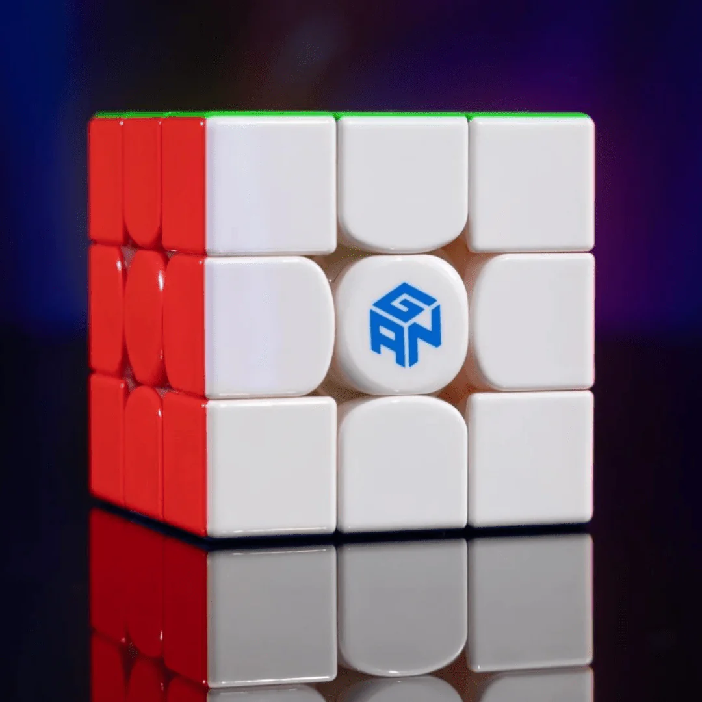

Imagine Dragons
Imagine Dragons are an American Alternative Rock band known for hits, such as Believer, Thunder, Radioactive, and many, many more.
I discovered Imagine Dragons almost 3 years ago and have been obsessed ever since. I love songs such as Lonely, Battle Cry, Eyes Closed, Fire In These Hills, Destroyed (Demo), and litterally everything else they've ever put out
Their Albums (Release Order):
- Night Visions
- Smoke + Mirrors
- Evolve
- Origins
- Mercury (Acts 1 & 2)
- LOOM
- Reflections (From The Vault Of Smoke + Mirrors)

Speecubing
Speedcubing is the act of solving a Rubik's Cube (or Speedcube) as fast as you can.
I used to compete in this, you can find me profile here. Keep in mind I haven't competed in a while and therefore these averages are outdated.
Currently, I average 21 seconds at the 3x3 (the default cube). My favourite cube is the SQ-1, which I average 45s at.
Gaming
Gaming has always been a fun hobby for me. I've enjoyed it for as long as I can remember.
I haven't really played as much recently as I used to. Currently, I don't play many games at all. Only Fortnite and Clash Royale.
To be honest, I'm actually not sure at all why I like gaming. I kinda just do it, find it fun, and that's it. Theres nothing spesific I love about it, I just love it.